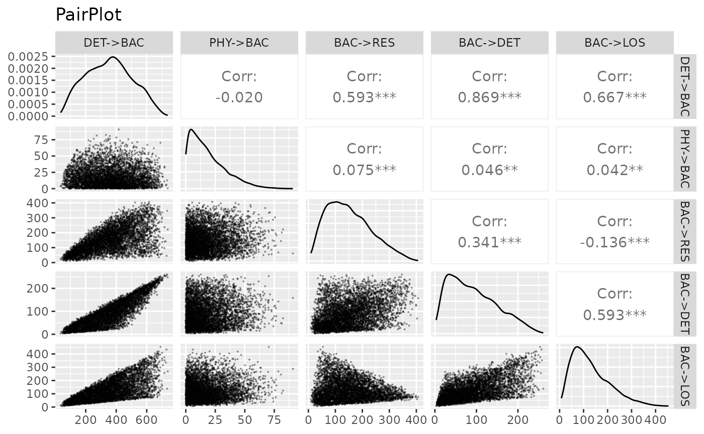

High dimensional polytope sampling with samplelim
Jacques Bréhélin, Philippe Regnault
Source:vignettes/high_dimensional_polytope_sampling_with_samplelim.rmd
high_dimensional_polytope_sampling_with_samplelim.rmdThe package samplelim for the R statistical software provides an efficient implementations (C++ encoded) of Markov Chain Monte Carlo (MCMC) algorithms for uniformly sampling high-dimensional polytopes. It aims particularly at handling linear inverse models (LIM) in metabolic (trophic, biochemical or urban) networks. Some support functions are also included that facilitate its use by practitioners.
Objective
samplelim implements two MCMC algorithms for sampling
high-dimensional polytopes, the Mirror Walk (MiW) introduced by Van
Oevelen et al. (2010) and the Billiard Walk (BiW) introduced by
Polyak and Gryazina (2014). Thanks to the inclusion of easy to use
support functions for linear inverse modeling of metabolic networks,
samplelim updated, extended, low-level-encoded, version
of the R package {limsolve},
that includes easy to use support functions for linear inverse modeling
of metabolic networks.
samplelim is built upon the C++ library {volesti}.
Precisely, the source code of the R package {volesti}
1.1.2-6 has been forked from its GitHub
repository as a basis for developing samplelim.
The C++ library {volesti} provides efficient
implementations of different MCMC algorithms for sampling
high-dimensional polytopes and estimating their volumes. The R package
counterpart proposes a subset of these algorithms among which the
BiW.
samplelim aims at combining the performance of
{volesti} with the convenient for practitioners features of
{limsolve} :
- the MiW is implemented in an optimized C++ encoded version of the
version encoded in pure R programming language in
{limsolve}; -
samplelim includes and slightly modifies the BiW from
{volesti}1.1.2-6 – the uniform distribution of the path length being replaced by the exponential distribution, as originally suggested by Polyak and Gryazina (2014); - support functions allowing an easy handling by users are included.
These functions are updated/modified versions of the original ones
present in
{limsolve}.
Definitions
Reflective algorithms
samplelim implements two sampling algorithms called Mirror Walk (MiW) an Billiard Walk (BiW), that rely on a reflection mechanism on the borders of the polytope to be sampled. Their general principle consists in drawing randomly the direction and path length of a segement as in the classical hit-and-run algorithm. However, if the trajectory reaches a border of the polytope before the random path length is achieved, then it is reflected on this border, moving forward this reflected direction for the remaining distance. This is repeated until the trajectory finally reaches a point within the polytope. Then, new direction and path length are randomly chosen, and so on.

Reflection of the path in the MiW and BiW algorithms
Jump length
Both the MiW and the BiW algorithms use a parameter called “jump
length” (jmp) in drawing the direction and length of the
segment.
This is an important parameter: if its value is too small, exploration of the polytope will not be efficient and would require a very large number of points . Conversely, if the jump is too big the sampling process could take time because the trajectory of the chain may reach borders of the polytope and hence many reflections will need to be computed.
The precise definition of the jump differs between the two algorithms:
For the MiW, direction and length are obtained as the direction and norm of a vector \(v\), where \(v\) is s drawn from a centered non correlated Gaussian vector \(V = (V_1,...,V_n)\) with Var \(V_i = \sigma_i^2\). The vector \(\sigma^2=(\sigma_1^2,...,\sigma_n^2)\) is called the jump length.
For the BiW, the direction is drawn from the uniform distribution on the unit sphere of \(\mathbb{R}^n\) and the path length is \(L=\tau \log(1/U)\) where \(U\) is drawn from a uniform distribution on \([0, 1]\). The jump length is the parameter \(\tau > 0\).
Thinning and burn-in
To achieve an MCMC sample closer to a sample of a uniform
distribution, two integer parameters are to be used: the burn-in
(burn) and the thinning (thin).
Let a sample be obtained as described above. Then,
The first values of the sample are correlated with the starting point and far from the limit uniform distribution of the chain. Thus, the burn-in parameter is the number of first values to be discarded from the sample.
Consecutive points of a Markov chain are highly correlated. Thus, the thinning parameter is the number of points to be discarded between points kept in the final sample.
For more information about choosing the burn-in and thinning values, see Section The Raftery and Lewis diagnostic.
The polytope to be sampled
An intersection of hyper-planes and half-spaces defines an \(n\)-dimensional convex set known as a polytope \(\mathcal{P}\). In mathematical words, \(\mathcal{P} = \{ x \in \mathbb{R}^n: Ax = B, Gx \geq H \}\), where \(A\) is an \(m\times n\) matrix, with \(m \leq n\), \(B \in \mathbb{R}^m\), \(G\) is a \(k \times n\) matrix, with \(k \geq 0\) and \(H \in \mathbb{R}^k\). Inequality constraints, represented by the matrix \(G\), always present in linear inverse models for metabolic networks, make the polytope bounded.
For the mere aim of illustration, we will consider in the following the minimal toy example defined by the constraints
\[\begin{cases} 1x_1 + 1x_2 + 1x_3 = 1 \\ 0x_1 + 0x_2 + 1x_3 \geq 0.7 \\ 0x_1 + 0x_2 - 1x_3 \geq 0 \\ 0x_1 + 1x_2 + 0x_3 \geq 0.8 \\ 0x_1 - 1x_2 + 0x_3 \geq 0 \\ 1x_1 + 0x_2 + 0x_3 \geq 0.8 \\ -1x_1 + 0x_2 + 0x_3 \geq 0 \\ \end{cases}\]
with associated matrices \[ \mathbf{A} = \begin{pmatrix} 1 & 1 & 1 \end{pmatrix}, \quad \mathbf{B} = \begin{pmatrix} 1 \end{pmatrix}, \quad \mathbf{G} = \begin{pmatrix} 0 & 0 & 1 \\ 0 & 0 & -1 \\ 0 & 1 & 0 \\ 0 & -1 & 0 \\ 1 & 0 & 0 \\ -1 & 0 &0 \end{pmatrix},\quad \mathbf{H} = \begin{pmatrix} 0.7 \\ 0 \\ 0.8 \\ 0 \\ 0.8 \\ 0 \end{pmatrix}\].
The main argument lim of rlim() is a list
with (at least) four components named A, B,
G and H, that are the matrices and vectors
defining the polytope to be sampled. Below those components are set with
the values of the toy model.
library("samplelim")
# Define equality and inequality constraints through matrices A, B, G, H
A <- matrix(c(1, 1, 1), nrow = 1, ncol = 3)
B <- 1
G <- -matrix(c(0, 0, 1,
0, 0, -1,
0, 1, 0,
0, -1, 0,
1, 0, 0,
-1, 0, 0),
byrow = TRUE,
nrow = 6, ncol = 3)
H <- -matrix(c(0.7, 0, 0.8, 0, 0.8, 0), nrow = 6)
# Store into a list
lim_exm <- list(A = A, B = B,G = G,H = H)
# Sampling into the polytope defined by these constraints
sample <- rlim(lim_exm)
# Show first points of the sample with the head function
head(sample)## [,1] [,2] [,3]
## [1,] 0.2002727 0.1354266 0.6643007
## [2,] 0.1601968 0.2044786 0.6353246
## [3,] 0.2434451 0.2680386 0.4885162
## [4,] 0.2464662 0.1946565 0.5588773
## [5,] 0.3173816 0.1214052 0.5612132
## [6,] 0.3147804 0.0250392 0.6601804The sample generated by rlim() can be visualized thanks
to a 3D scatterplot.
# Preparing sample for 3D scatterplot
colnames(sample) <- c("X", "Y","Z")
sample <- as.data.frame(sample)
library("plotly")
plot_sample <- plot_ly(sample, x = ~X, y = ~Y, z = ~Z, size = 0.2)
plot_sample <- plot_sample %>% add_markers()
plot_sample <- plot_sample %>% layout(title = "Estimation of the polytope
using sample points")
plot_sample
Sampling the polytope for a model defined in a file
First the model saved in DeclarationFileBOWF-short.txt file is
imported and converted into a lim object using
df2lim().
DF <- system.file("extdata", "DeclarationFileBOWF-short.txt", package = "samplelim")
model <- df2lim(DF)All the attributes of the model are listed as follows.
att <- attributes(model)
att## $names
## [1] "file" "NUnknowns" "NEquations" "NConstraints" "NComponents"
## [6] "NExternal" "NVariables" "A" "B" "G"
## [11] "H" "Cost" "Profit" "Flowmatrix" "VarA"
## [16] "VarB" "Parameters" "Components" "Externals" "rates"
## [21] "markers" "Variables" "costnames" "profitnames" "eqnames"
## [26] "ineqnames" "Unknowns" "ispos"
##
## $class
## [1] "lim"These attributes can be accessed by using ‘$attribute’, for example variable names.
model$Variables## [1] "FBFIngest" "BIVIngest" "ZOOIngest" "BACIngest" "FBFprod"
## [6] "BACprod" "ZOOprod" "BIVprod" "PHYprod" "GPP"
## [11] "totRES" "Herbivory" "DETritivory"Theoretical ranges for all variables can be determined using the
lim.ranges() function. It provides a lower bound, an upper
bound, and the range (length of the interval between bounds).
lim.ranges(model)## min max range
## FIX->PHY 114.4444444 860.000000 745.555556
## IMP->FBF 0.8294294 19.140679 18.311249
## DET->BIV 9.7687500 91.874002 82.105252
## DET->ZOO 0.0000000 27.892545 27.892545
## DET->BAC 0.0000000 848.497039 848.497039
## PHY->RES 5.7222222 258.000000 252.277778
## PHY->DET 5.7222222 430.000000 424.277778
## PHY->BIV 35.8187500 170.623147 134.804397
## PHY->ZOO 1.3768528 136.181250 134.804397
## PHY->BAC 0.0000000 128.291897 128.291897
## PHY->LOS 0.0000000 128.291897 128.291897
## BAC->RES 0.0000000 506.793943 506.793943
## BAC->DET 0.0000000 308.624517 308.624517
## BAC->LOS 0.0000000 529.070600 529.070600
## ZOO->RES 0.1658859 49.222139 49.056253
## ZOO->DET 0.3317718 82.036898 81.705126
## ZOO->FBF 0.8294294 19.140679 18.311249
## ZOO->BIV 0.0000000 38.690056 38.690056
## ZOO->ZOO 0.0000000 16.407380 16.407380
## ZOO->LOS 0.0000000 77.284275 77.284275
## BIV->RES 18.2350000 195.710163 177.475163
## BIV->DET 11.7225000 110.248803 98.526303
## BIV->FBF 0.8294294 19.140679 18.311249
## BIV->LOS 0.3968214 77.088716 76.691894
## FBF->RES 3.1901131 31.901131 28.711018
## FBF->DET 0.6380226 31.901131 31.263108
## FBF->FBF 0.6380226 6.380226 5.742204
## FBF->LOS 0.0000000 4.017179 4.017179The sampling of the polytope is obtained by using the
rlim() function.
## FIX->PHY IMP->FBF DET->BIV DET->ZOO DET->BAC PHY->RES PHY->DET PHY->BIV
## [1,] 304.7398 8.188190 41.13866 2.7547661 191.7810 22.82508 116.5854 72.50837
## [2,] 310.0166 7.289395 20.44853 11.2781200 208.4425 24.45221 121.4505 52.54402
## [3,] 335.1810 4.073940 24.81560 6.2406614 184.5813 24.86050 139.8148 65.42448
## [4,] 381.6556 6.260583 23.77029 5.3914830 280.6353 31.59105 187.6128 62.32985
## [5,] 437.7902 6.586501 22.59578 2.3529756 270.7535 102.43286 184.4280 66.43580
## [6,] 473.2961 6.587768 21.11376 0.5112398 290.2647 123.50966 194.6432 75.63598
## PHY->ZOO PHY->BAC PHY->LOS BAC->RES BAC->DET BAC->LOS ZOO->RES
## [1,] 59.80315 5.23948692 27.778340 115.37803 32.25215 49.39029 16.36737
## [2,] 76.64730 13.18244357 21.740057 89.80800 65.83728 65.97968 24.52340
## [3,] 53.65594 27.92060867 23.504666 77.19170 21.71152 113.59871 17.47108
## [4,] 61.91220 5.04864128 33.161092 79.23301 51.96859 154.48238 10.06050
## [5,] 73.94561 4.69108540 5.856817 78.89247 42.99369 153.55840 17.91442
## [6,] 67.19485 0.09761946 12.214762 126.34517 33.68154 130.33562 13.38351
## ZOO->DET ZOO->FBF ZOO->BIV ZOO->ZOO ZOO->LOS BIV->RES BIV->DET BIV->FBF
## [1,] 22.71853 7.604794 12.465501 4.2681856 3.401717 38.24217 52.54603 7.252428
## [2,] 21.35765 7.374766 12.183025 3.8145890 22.486571 38.23405 22.53904 6.834049
## [3,] 24.25100 3.775960 6.702346 2.5531203 7.696216 41.66280 27.28734 3.880078
## [4,] 34.75122 7.448425 2.859171 3.2713745 12.184368 34.09816 29.80863 7.685167
## [5,] 29.05678 6.501696 14.203753 6.6396701 8.621930 47.62291 30.38804 5.731392
## [6,] 32.13029 5.352583 12.628739 0.7826344 4.210968 39.98247 41.72258 6.887012
## BIV->LOS FBF->RES FBF->DET FBF->FBF FBF->LOS
## [1,] 28.07190 10.918909 11.572327 4.488263 0.55417527
## [2,] 17.56845 11.479992 8.984660 4.096887 1.03355846
## [3,] 24.11221 8.577051 2.572923 2.040761 0.58000482
## [4,] 17.36734 14.940587 5.655848 4.524135 0.79773901
## [5,] 19.49299 8.770760 8.835711 3.665106 1.21311748
## [6,] 20.78643 9.077730 9.712114 4.315374 0.03751877Note that the above sequence of draws must not be studied as a representative sample of the polytope, since its parameters (thinning, burning, sample size) were not chosen accurately.
A new sample has to be computed, using the correct parameters obtained via the Raftery and Lewis diagnostics from this initial sequence of draws.
Evaluating the quality of a sample using performance diagnostics
Multiple statistical tools and criterion, usually known as “diagnostics”, exist to evaluate the convergence of MCMC algorithms. They are to be applied to sequences of draws and performed separately for each variable (each flow), inducing some insight on the uniformity of the distribution of draws. Here are some diagnostics that are of use in Girardin et al., where references are given.
The Raftery and Lewis diagnostic
The main principle behind the Raftery and Lewis diagnostic is that a correct sample of the objective distribution, here the uniform distribution, should give precise estimates of its quantiles. Usually the 0.025 quantile is used.
This diagnostic provides multiple pieces of information, such as the burning value (M), an estimate of the sample size to ensure precise estimation of a prescribed quantile (N), a lower bound (Nmin), and a dependence factor (I).
The dependance factor assesses the extent to which auto-correlation inflates the required sample size; values larger than 5 indicate a strong auto-correlation.
Raftery and Lewis diagnosticperforms as follows.
q <- 0.025
RL <- coda::raftery.diag(data = sample, q=q)
RL##
## Quantile (q) = 0.025
## Accuracy (r) = +/- 0.005
## Probability (s) = 0.95
##
## Burn-in Total Lower bound Dependence
## (M) (N) (Nmin) factor (I)
## FIX->PHY 18 19902 3746 5.310
## IMP->FBF 2 3680 3746 0.982
## DET->BIV 2 3803 3746 1.020
## DET->ZOO 2 3803 3746 1.020
## DET->BAC 18 20799 3746 5.550
## PHY->RES 12 14451 3746 3.860
## PHY->DET 15 17676 3746 4.720
## PHY->BIV 2 3680 3746 0.982
## PHY->ZOO 2 3930 3746 1.050
## PHY->BAC 2 3741 3746 0.999
## PHY->LOS 2 3803 3746 1.020
## BAC->RES 8 10712 3746 2.860
## BAC->DET 4 5211 3746 1.390
## BAC->LOS 8 11704 3746 3.120
## ZOO->RES 3 4062 3746 1.080
## ZOO->DET 2 3803 3746 1.020
## ZOO->FBF 2 3741 3746 0.999
## ZOO->BIV 2 3680 3746 0.982
## ZOO->ZOO 2 3930 3746 1.050
## ZOO->LOS 2 3803 3746 1.020
## BIV->RES 2 3803 3746 1.020
## BIV->DET 2 3620 3746 0.966
## BIV->FBF 2 3741 3746 0.999
## BIV->LOS 2 3741 3746 0.999
## FBF->RES 2 3803 3746 1.020
## FBF->DET 2 3741 3746 0.999
## FBF->FBF 2 3680 3746 0.982
## FBF->LOS 2 3620 3746 0.966Note that the value of the flow “FIX->PHY” is here greater than 5, indicating a strong auto-correlation.
The maximum burn-in value and estimate sample size are to be used to improve the sampling.
# Get the maximum value of 'Burn-in' (Burn-in is the first column)
max_burn <- max(RL$resmatrix[,1])
# Get the maximum value of 'Thinning' (Burn-in is the fifth column)
max_thin <- max(RL$resmatrix[,5])
# Get the maximum value of 'Total (N)' (Total (N) is the second column)
max_total <- max(RL$resmatrix[,2])
# Sampling again with those new parameters
better_sample <- rlim(model, nsamp = max_total, thin = max_thin, burn = max_burn)The Geweke diagnostic
The Geweke diagnostic is a classical statistical test of comparison of means applied to prescribed proportions of the first and last points generated by an MCMC algorithm, say \(0 < p_1 < 1\) and \(0 < p_2 < 1\), with \(p_1 + p_2 < 1\). If the difference of means is too large, the null hypothesis of convergence is rejected. The values \(p_1 = 0.1\) and \(p_2 = 0.5\) are usual.
For each variable, a value \(Z\) is computed, the hypothesis of convergence of the algorithm is rejected if \(\left| Z \right|\) exceeds a prescribed quantile of the normal distribution. With \(p_1 = 0.1\) and \(p_2 = 0.5\), convergence is rejected when \(\left| Z \right| \geq 1.28\).
frac1 <- 0.1
frac2 <- 0.5
G <- coda::geweke.diag(sample, frac1 = frac1, frac2 = frac2)
G##
## Fraction in 1st window = 0.1
## Fraction in 2nd window = 0.5
##
## FIX->PHY IMP->FBF DET->BIV DET->ZOO DET->BAC PHY->RES PHY->DET PHY->BIV
## 0.399384 -1.219764 -0.224899 1.165463 0.288149 0.503854 0.342449 -0.117567
## PHY->ZOO PHY->BAC PHY->LOS BAC->RES BAC->DET BAC->LOS ZOO->RES ZOO->DET
## 1.509264 0.029311 -0.941075 0.890025 -0.110944 -0.048667 2.542936 0.137219
## ZOO->FBF ZOO->BIV ZOO->ZOO ZOO->LOS BIV->RES BIV->DET BIV->FBF BIV->LOS
## -0.504739 -0.903382 1.516963 2.627267 -0.316630 0.006371 -0.842774 -0.162492
## FBF->RES FBF->DET FBF->FBF FBF->LOS
## -0.617774 -0.520566 -1.205047 0.741212Note that some values above are greater than 1.28.
# View flows with |Z| greater than 1.28
abs(G$z)>=1.28## FIX->PHY IMP->FBF DET->BIV DET->ZOO DET->BAC PHY->RES PHY->DET PHY->BIV
## FALSE FALSE FALSE FALSE FALSE FALSE FALSE FALSE
## PHY->ZOO PHY->BAC PHY->LOS BAC->RES BAC->DET BAC->LOS ZOO->RES ZOO->DET
## TRUE FALSE FALSE FALSE FALSE FALSE TRUE FALSE
## ZOO->FBF ZOO->BIV ZOO->ZOO ZOO->LOS BIV->RES BIV->DET BIV->FBF BIV->LOS
## FALSE FALSE TRUE TRUE FALSE FALSE FALSE FALSE
## FBF->RES FBF->DET FBF->FBF FBF->LOS
## FALSE FALSE FALSE FALSE## [1] 4Effective Sample Size
The Effective Sample Size (ESS) reflects the amount of autocorrelation in the MCMC draws. The closer ESS is to N (the sample size), the better, since it means that the draws are lowly auto-correlated.
coda::effectiveSize(sample)## FIX->PHY IMP->FBF DET->BIV DET->ZOO DET->BAC PHY->RES PHY->DET
## 73.27793 5515.48765 2362.69136 4536.24414 85.57546 82.47209 78.97687
## PHY->BIV PHY->ZOO PHY->BAC PHY->LOS BAC->RES BAC->DET BAC->LOS
## 2204.15435 2286.65596 3086.86185 3405.32690 162.45359 114.84217 175.07854
## ZOO->RES ZOO->DET ZOO->FBF ZOO->BIV ZOO->ZOO ZOO->LOS BIV->RES
## 3343.66086 2842.34399 5658.98126 4664.53519 4074.24166 3095.57399 2115.14182
## BIV->DET BIV->FBF BIV->LOS FBF->RES FBF->DET FBF->FBF FBF->LOS
## 3569.76304 5220.94010 3428.60113 5895.09778 4819.34706 5782.26870 5000.00000Adjusting sampling methods and parameters
Users can choose the sampling method, the size of the sample and the values of parameters such as the jump length.
Choosing the sample size and sampling method
By default, rlim() samples 3000 points using the Mirror
Walk algorithm.
The sample size can be chosen as follows.
# Set the number of points to sample to 10000 using nsamp
big_sample <- rlim(model, nsamp = 10000)
dim(big_sample)The algorithm can be changed using the “type” argument. “BiW” for the Billiard Walk, nothing or “MiW” for the Mirror Walk.
Adjusting the value of the jump
The choice of the jump is of real importance even if finding an optimal value is a difficult task. By default, samplelim uses an “adaptative jump” defined as one tenth of each range of the reduced polytope.
# Sampling with default jump (adaptative jump)
default_jump_sample <- rlim(model, nsamp = 1000, type="MiW")
# Get the value of the adaptative jump
# Reduce the polytope
model_reduced <- lim.redpol(model)
# Obtain the ranges of the reduced polytope and divide them by 10
ada_jump <- pol.ranges(G=model_reduced$G,H=model_reduced$H)[,3]/10
ada_jump## [1] 85.8737072 43.2505575 46.6294874 42.3545594 30.6718427 49.6929519
## [7] 43.7658944 49.2052850 13.8997051 21.0003275 29.6836945 14.1018252
## [13] 1.6407380 17.4951944 29.0894373 19.6763145 38.9700638 19.0621935
## [19] 26.0386246 40.6307499 0.5742204 23.8641501Custom jump may be used, any positive value \(\sigma²\) for the BiW, and any vector value \(\sigma^2=(\sigma_1 ²,...,\sigma_n²)\) for the MiW. Note that the length \(n\) of the vector is the dimension of the reduced polytope. Usually the default choice is quite good, custom jumps are to be avoided without valid arguments.
# Billiard Walk
# Set sigma^2 value
sigma2 <- 1
# Sample with chosen jump value
sample_biw <- rlim(model, nsamp = 1000, type = "BiW", jmp=sigma2)
# Mirror Walk
# Get the dimension of the reduced polytope
n=dim(lim.redpol(model)$G)[2]
n## [1] 22Create reproducible examples
In certain situations, one may need to provide reproducible examples, for instance in scientific publications. Reproducibility ensures that the results remain consistent when the code is rerun, which is particularly important when randomness is involved.
To ensure a reproducible example a parameter called “seed”, that can
be any integer, is needed with the rlim() function. As far
as the other parameters are unchanged a same seed will produce the same
sample.
The following example generate three samples (two using the same seed
and one with a different) using rlim(). The samples are
then compared in order to check the consistency of the seed.
# Set the seeds
seed1 <- 123
seed2 <- 456
# Generate the samples
sample1 <- rlim(model, nsamp = 500, seed = seed1)
sample2 <- rlim(model, nsamp = 500, seed = seed1)
sample3 <- rlim(model, nsamp = 500, seed = seed2)
# Compare the samples by checking if all the values are the same
print(paste("Are sample1 and sample2 the same ? ", all(sample1 == sample2)))## [1] "Are sample1 and sample2 the same ? TRUE"## [1] "Are sample1 and sample3 the same ? FALSE"Working with a reduced polytope
The sampling process uses a reduced polytope. The polytope \(\mathcal{P} = \{ x \in \mathbb{R}^n: Ax = B, Gx \geq H \}\) is reduced to a polytope \(\mathcal{P'} = \{ x \in \mathbb{R}^{n-k}: G'x \geq H' \}\) with full rank \(n-k\), with \(k\) the rank of the matrix \(A\), \(G' = GZ\), \(H' = H-Gx_0\), where the matrix \(Z\) is the basis of the right null space of \(A\). Further, \(x_0\) is a particular solution in \(\mathcal{P}\).
Note: The following section is more theoretical and advanced. Studying the reduced polytope may be of interest to advanced readers but may be ignored by practitioners. For more information, see Yao and Kane.
The components of the reduced polytope are obtained from the full
polytope by using lim.redpol().
# Get the full polytope
DF <- system.file("extdata", "DeclarationFileBOWF-short.txt", package = "samplelim")
full <- df2lim(DF)
# Project the polytope
reduced <- lim.redpol(full)
# Comparison of the shape of the constraint matrices of the two polytopes
# full
dim(full$G)## [1] 72 28
# projected
dim(reduced$G)## [1] 72 22
# Get k the rank of the matrix A
k <- qr(full$A)$rank
# Get the Z matrix
reduced$Z
# Get the particular solution x0
reduced$x0
# Get the matrix G'
reduced$G
# Get the vector H'
reduced$HThe reduced polytope can now be sampled. The obtained sample leads to
a sample of the full polytope by using red2full() in which
the particular solution \(x_0\) and the
matrix \(Z\) have to be given.
## [,1] [,2] [,3] [,4] [,5] [,6] [,7]
## [1,] 74.83223 43.13515 41.59024 28.49893 10.329634 34.89799 18.39237
## [2,] 84.78960 58.64567 60.09307 27.65637 16.962835 31.76416 15.99816
## [3,] 59.04672 67.51550 22.28097 38.07940 1.629436 26.12109 37.11897
## [4,] 100.85553 57.84883 104.06348 45.11101 27.580583 60.73539 68.45584
## [5,] 95.62668 77.17322 69.96362 46.41447 27.955809 60.22458 54.22486
## [6,] 119.67894 48.76823 46.95739 56.01541 47.899503 79.03990 40.05395
## [,8] [,9] [,10] [,11] [,12] [,13] [,14]
## [1,] 7.837591 -3.690632 35.36470 -37.49394 12.0562498 1.577896 -3.535907
## [2,] 18.430146 14.481379 30.82407 -40.69700 25.2339152 2.390334 15.437025
## [3,] -9.347489 -14.486050 27.97505 -36.57888 -2.2503842 1.796701 -7.303899
## [4,] 14.279603 5.107705 57.17872 -14.96610 0.4293629 6.355259 4.524261
## [5,] 7.279720 6.791954 46.19881 -21.78204 16.6952150 3.189978 1.930370
## [6,] 1.190374 -6.695064 32.42994 -41.25052 10.0768679 1.722250 -5.028717
## [,15] [,16] [,17] [,18] [,19] [,20] [,21]
## [1,] -14.782424 15.87965 -47.70550 -16.498226 39.92648 62.57160 1.524565
## [2,] 0.194600 10.89087 -59.63070 -15.769408 48.93137 61.62917 1.430687
## [3,] 4.163762 21.04047 -43.21725 -21.422267 35.55963 73.11584 3.242878
## [4,] -9.836142 36.51153 -16.04820 -8.912600 26.32741 49.94306 3.337437
## [5,] 1.590903 42.40694 -31.98019 1.117422 29.55629 54.53992 2.262555
## [6,] -18.387164 10.00307 -53.69917 -19.320047 42.59050 69.24565 3.240836
## [,22]
## [1,] 34.60742
## [2,] 43.99625
## [3,] 31.55693
## [4,] 17.49126
## [5,] 27.42026
## [6,] 38.59601
# Turn sampled points of the reduced polytope into sampled points of the full polytope
sample_full <- red2full(sample_reduced, reduced$x0, reduced$Z)Conversely, note that a sample of the full polytope can also be
turned into a sample of the reduced polytope with
full2red().
sample_reduced2 <- full2red(sample_full, reduced$x0, reduced$Z)Performance comparison between limSolve and samplelim
This section compare the execution time of the
xsample()function from {limSolve} and the
rlim() function from samplelim. Both
functions use here the same MiW algorithm and the same sample size (1000
points).
library("limSolve")
# Execution time for xsample (limSolve)
start_time1 <- Sys.time()
sample1 <-xsample(E = model$A, F = model$B, G = model$G, H = model$H, iter = 1000)
end_time1 <- Sys.time()
time1 <- end_time1 - start_time1
print(paste("Time for xsample():", round(time1,3), "seconds"))## [1] "Time for xsample(): 1.981 seconds"
# Execution time for rlim (samplelim)
start_time2 <- Sys.time()
sample2 <- rlim(model, nsamp = 1000)
end_time2 <- Sys.time()
time2 <- end_time2 - start_time2
print(paste("Time for rlim():", round(time2,3), "seconds"))## [1] "Time for rlim(): 0.284 seconds"Even with a small sample size, rlim() outperforms
xsample(). This performance advantage increases with the
sample size.
Plot distributions of sample variables
Distribution of sample variables as well as scatter plots for pairs
of variables can be shown using the ggpairs() function. For
a better visibility, it is recommended not to take more than 5 variables
at the same time. The indexes of the desired variables must be selected
manually. In this example we consider the variables involving the BAC
compartment.
# ggpairs() needs the GGally package
library("GGally")
# The sample needs to be converted as a data.frame
sampleDF=as.data.frame(sample)
# View all the variables names and their indexes
vars <- names(sampleDF)
print(rbind(1:length(vars), vars))## [,1] [,2] [,3] [,4] [,5] [,6]
## "1" "2" "3" "4" "5" "6"
## vars "FIX->PHY" "IMP->FBF" "DET->BIV" "DET->ZOO" "DET->BAC" "PHY->RES"
## [,7] [,8] [,9] [,10] [,11] [,12]
## "7" "8" "9" "10" "11" "12"
## vars "PHY->DET" "PHY->BIV" "PHY->ZOO" "PHY->BAC" "PHY->LOS" "BAC->RES"
## [,13] [,14] [,15] [,16] [,17] [,18]
## "13" "14" "15" "16" "17" "18"
## vars "BAC->DET" "BAC->LOS" "ZOO->RES" "ZOO->DET" "ZOO->FBF" "ZOO->BIV"
## [,19] [,20] [,21] [,22] [,23] [,24]
## "19" "20" "21" "22" "23" "24"
## vars "ZOO->ZOO" "ZOO->LOS" "BIV->RES" "BIV->DET" "BIV->FBF" "BIV->LOS"
## [,25] [,26] [,27] [,28]
## "25" "26" "27" "28"
## vars "FBF->RES" "FBF->DET" "FBF->FBF" "FBF->LOS"
# Choose the index of desired variables
keep <- c(5,10,12,13,14)
# Plot the pairs plot
ggpairs(sampleDF,columns=keep, lower=list(continuous=wrap("points",alpha=0.3,size=0.1),
combo=wrap("dot",alpha=0.4,size=0.2)),title ="PairPlot") For each plot, the name of the first variable is at the top and the name of the second on the right. Graphs on the diagonal are distribution plots. The graphs at bottom left are scatter plots, and the values at top right are Pearson correlation coefficients between the two associated variables.